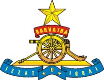

Abbot Gun

130mm M-46 Russian Fd Gun

Pinaka

The Regiment of Artillery is an operational arm (a regiment/corps) of the Indian Army. Formerly part of Royal Indian Artillery (RIA) of British Indian Army which itself traces its origins to the formation of Bombay Artillery in 1827. It was later involved in extensive service in the First World War, in East Africa, Gallipoli, Mesopotamia and Palestine.
Today it is the second largest arm of the Indian Army, and with its guns, mortars, rocket launchers, unmanned aerial vehicles, surveillance systems, missiles and artillery firepower it constitutes almost one-sixth of its total strength.
Historically Mughal Emperor Babur is popularly credited with introduction of Artillery in India, in the Battle of Panipat in 1526, where he decisively used gunpowder firearms and field artillery and defeated the much larger army of Ibrahim Lodhi, the ruler of the large North Indian Delhi Sultanate, thus not just laying the foundation of the Mughal Empire but also setting a precedent of all future battles in the subcontinent. However evidence of earlier use of gun by Bahmani Kings in the 'Battle of Adoni' in 1368 and King Mohammed Shah of Gujarat in fifteenth century have been recorded.
The East India Company raised the first regular company of Artillery in 1748, with a small percentage of Indian Gunners called Gun Lashkars, Tindals and Serangs. A few Indian mountain artillery batteries, officered by the British, were raised in the 19th century and formed part of the Royal Artillery.[2] The Royal Indian Artillery (RIA) of the British India Army, was raised on 28 September 1827, as a part of the Bombay Army, a presidency army of the Bombay Presidency. It was later renamed as 5 Bombay Mountain Battery, and participated in the First Anglo-Afghan War (1839–1842).
The Regiment of Artillery was raised on 15 January 1935, when the first three Indian Field Regiments, originally numbered A, B, and C were authorised.[5] Originally called the 'Indian Regiment of Artillery', which later became 'The Regiment of Indian Artillery' on 1 November 1940 and 'Royal Regiment of Indian Artillery' in October 1945, after its success in World War II.[
The School of Artillery of the Indian Army is situated at Devlali near Nashik, and the Regiment of Artillery Museum, established in 1970, is also situated in Nashik at Nasik Road Camp.
Abbot Gun |
130mm M-46 Russian Fd Gun |
Pinaka |
During the Kargil War, it was the Indian Artillery that inflicted the most amount of damage.[9] The role played by the artillery was praised by the top army brass, the divisional commander, a brigade commander and a battalion commander. Two of the officers in that conflict were then General V.P. Malik, then Lieutenant General S. Padmanabhan both of whom went on to serve as Chief of Army Staff .

Flag of Indian Army Regiment of Artillery
This page was last edited on 01 Aug 2018, at 2330hr.